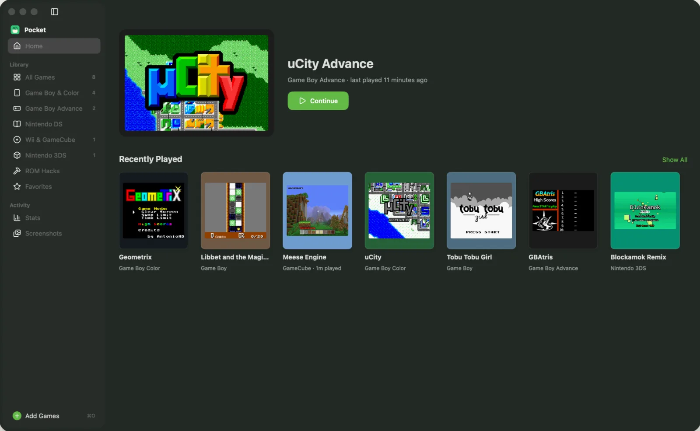
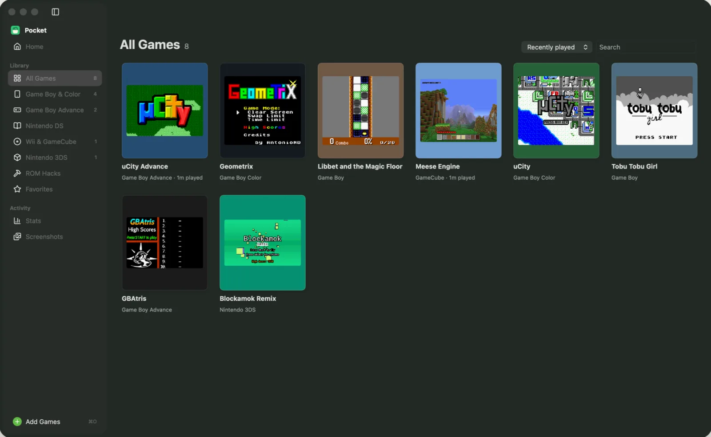
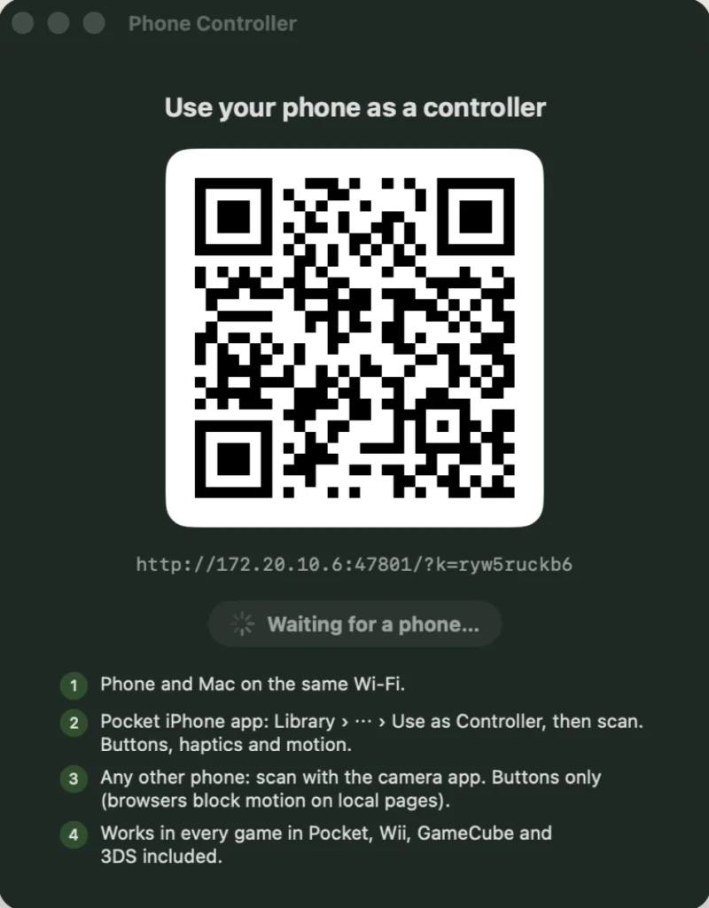

01
Pick up where you left off
The game you played last sits on top with a big Continue button. Everything else waits on the shelf below.
Pocket plays Game Boy, Game Boy Advance, DS, GameCube, Wii and 3DS games in one native Apple Silicon app. Your saves stay safe, your iPhone becomes the controller, and it costs nothing.
Free. No ads, no account. macOS 14 or later on Apple Silicon.

No separate emulators to set up, no folders of loose files. Add your games once and Pocket keeps them, their covers and their saves together.
The game you played last sits on top with a big Continue button. Everything else waits on the shelf below.

Covers, sorting, search and favourites. ROM hacks get a shelf of their own, and each system has its own section in the sidebar.

The big consoles run right next to your handhelds, with the same library, the same saves and the same controls.
Scan a code and your phone turns into a gamepad with buttons, haptics and motion. Point it at the screen for Wii games. Nothing to pair, no extra hardware.


On the Mac, choose File, then Phone Controller. A QR code appears.
In Pocket on iPhone, tap Use as Controller and point the camera at the code.
Buttons, haptics and motion work in every game, Wii, GameCube and 3DS included.
No Pocket on the phone? Scan with the camera app for buttons in the browser. Bluetooth controllers like DualSense, Xbox and Switch Pro work too.
The features people pay for elsewhere, built in and free. No ads during play, no subscription, nothing locked.
Missed a jump? Hold to go back a few seconds and try again.
Skip the grind at the speed you pick, not one fixed speed.
Type GameShark, Action Replay and CodeBreaker codes and switch them on and off anytime.
Add an IPS, UPS or BPS patch and Pocket finds the right base game and builds the hack. No separate patching tool, and it checks the result before saving it.
Sign in with your RetroAchievements account and unlock achievements as you play, with a pop-up for each one and a list per game.
Your saves travel between Pocket on Mac and iPhone through your own iCloud Drive.
Built for M‑series Macs. No Rosetta, no Intel leftovers.
Plain .sav files in and out. Bring saves from another emulator, take them anywhere.
Apple Silicon, M1 or later
macOS 14 Sonoma or later
Your own game files. None are included.
Yes. No ads, no subscription, no account and nothing locked behind a payment.
No. Pocket plays the games you own. Add your own game files and Pocket sorts them, finds covers and keeps their saves.
Game Boy, Game Boy Color, Game Boy Advance, Nintendo DS, GameCube, Wii and Nintendo 3DS.
Pocket is built natively for Apple Silicon (M1 and later) and needs macOS 14 Sonoma or later. It does not use Rosetta and does not run on Intel Macs.
Yes. Pocket imports and exports plain .sav files, and backs up your current save before replacing it.
Yes. Pocket for iPhone and iPad plays Game Boy, Game Boy Color, Game Boy Advance and DS games, shares saves with the Mac and doubles as the Mac's controller. It is coming to the App Store.
Soon. Pocket for Mac will be signed and notarized by Apple so it opens without warnings. Email me and you'll get a note the day it's out.
Signed and notarized by Apple, so it opens like any other app. Leave your email and you'll hear first.